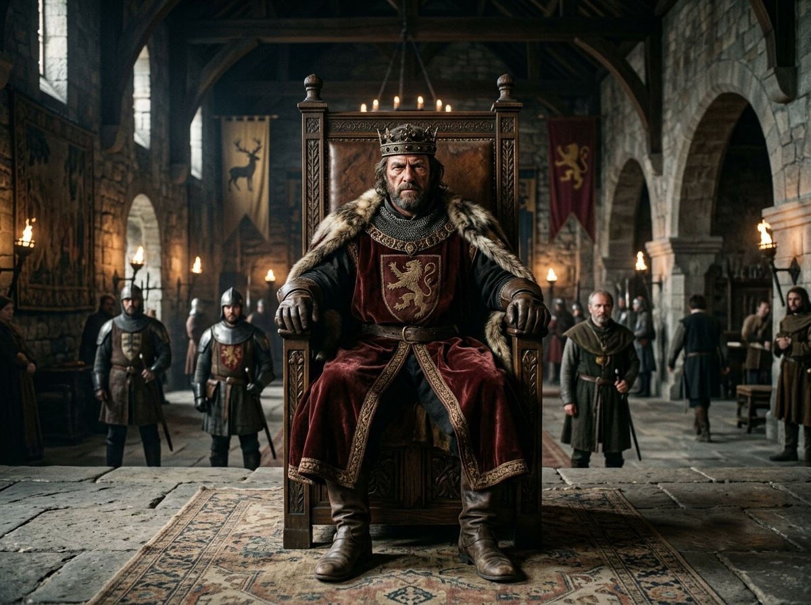
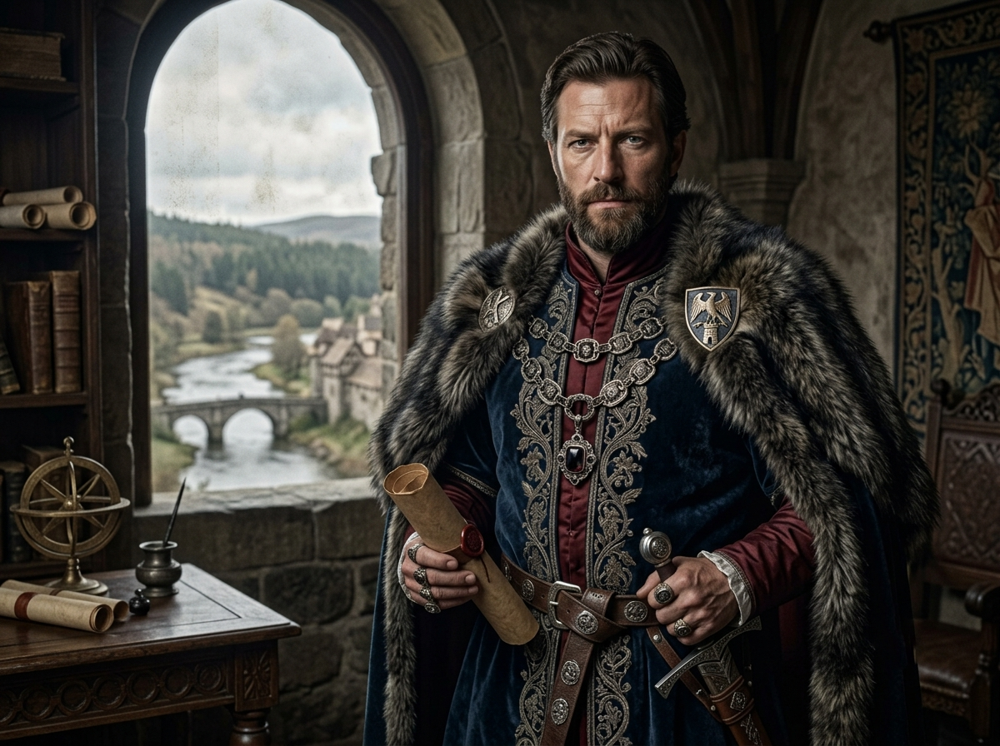
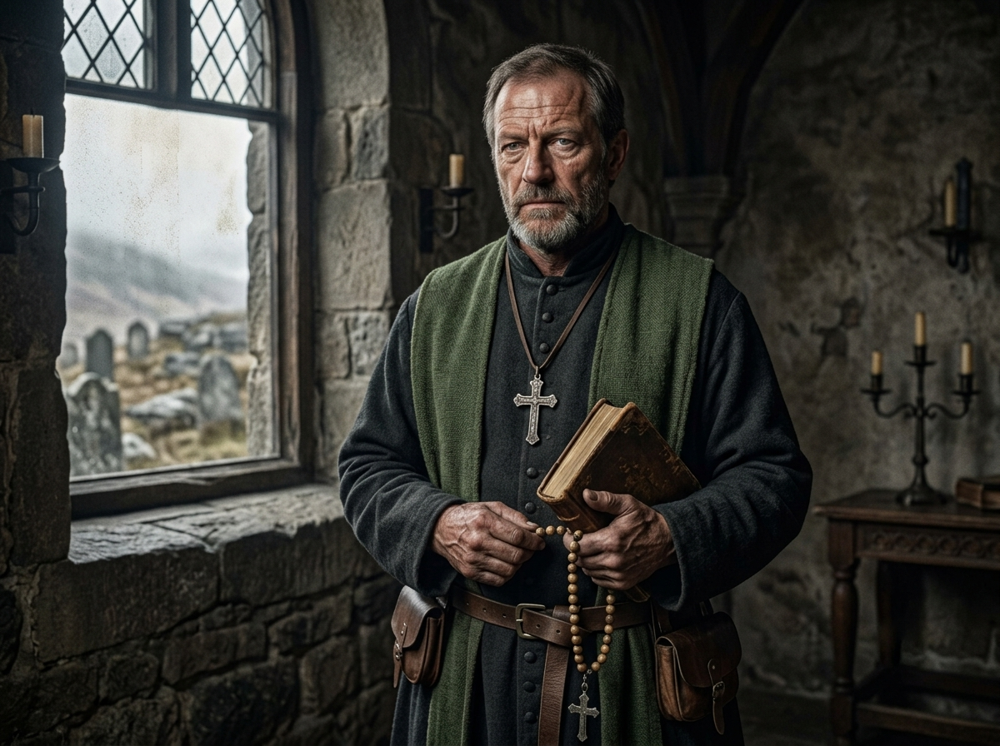
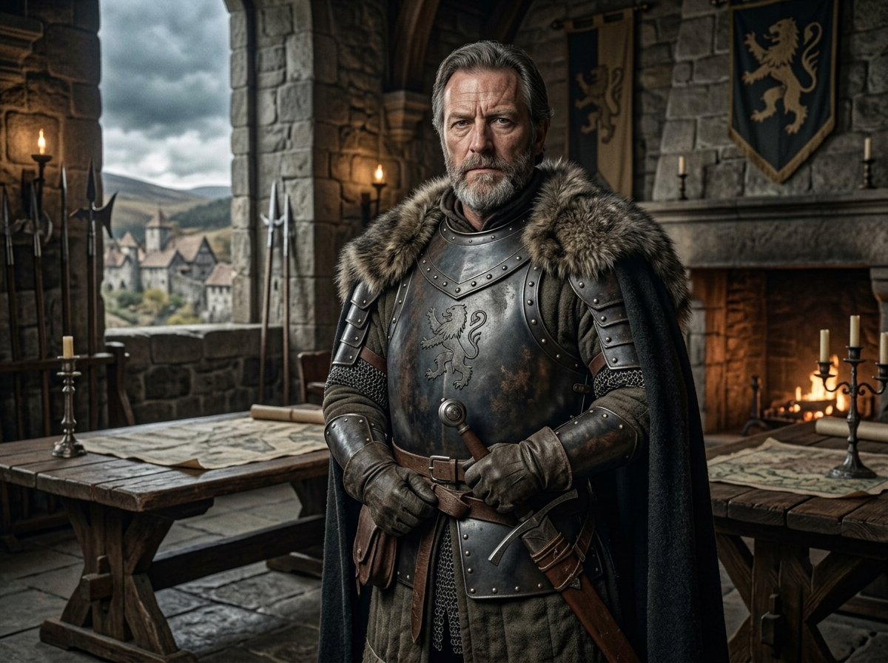
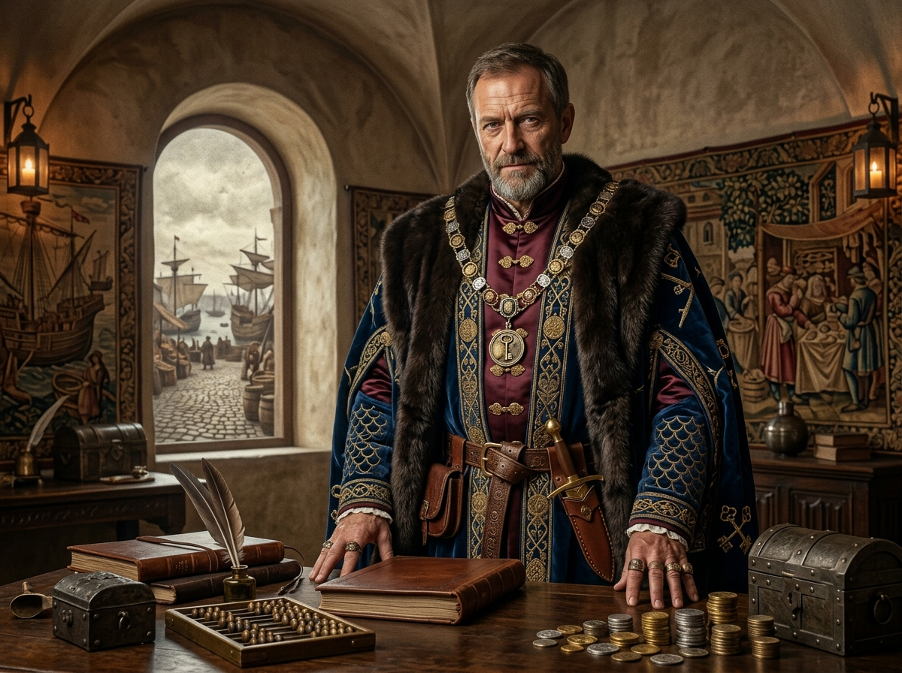
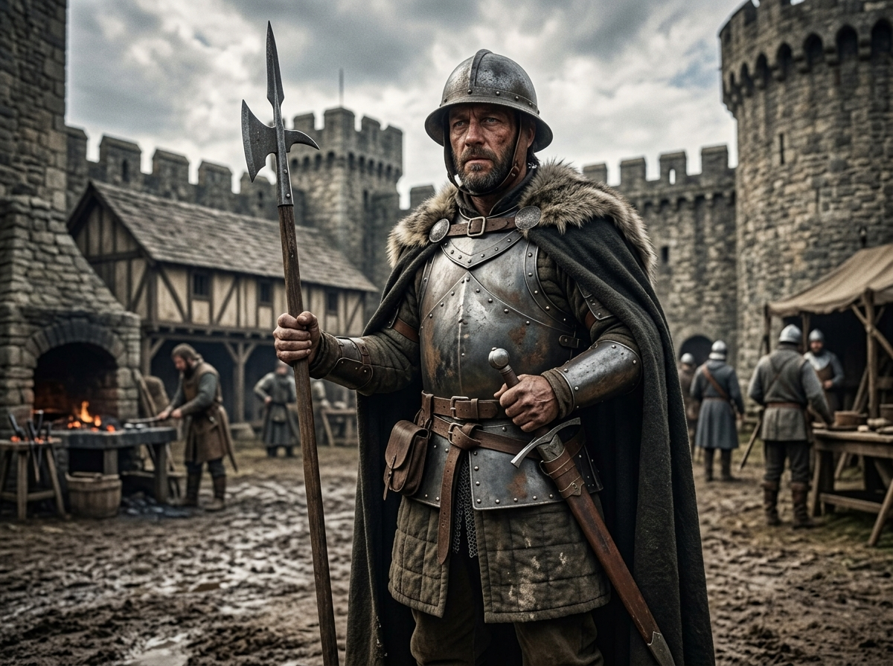
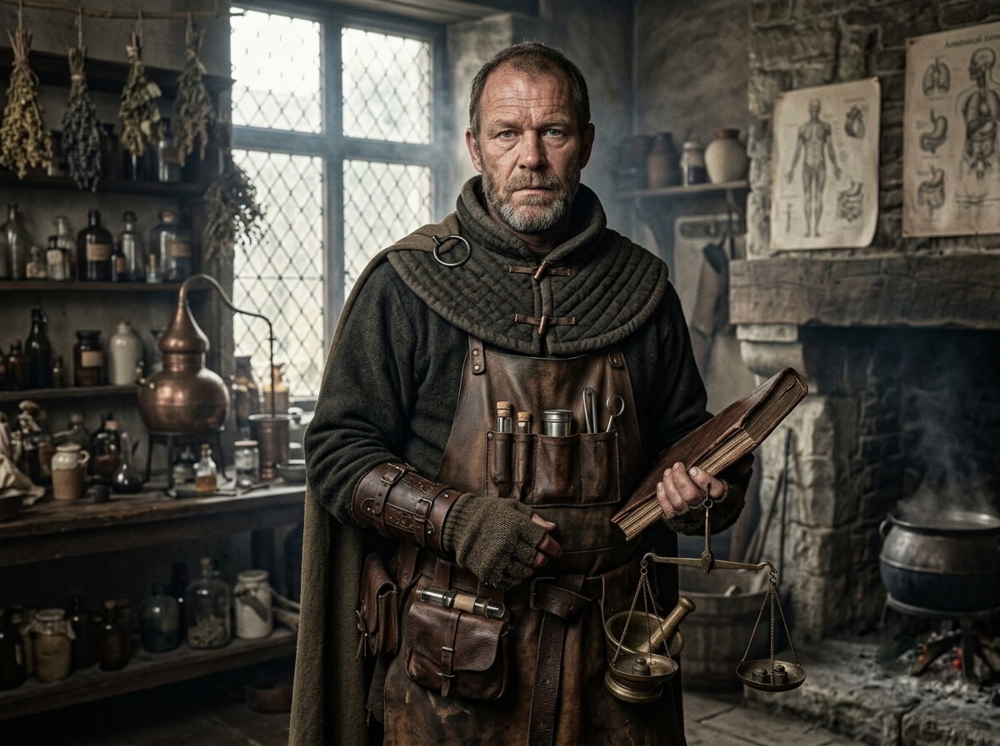
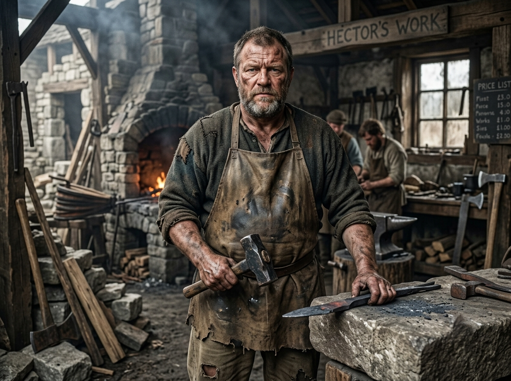
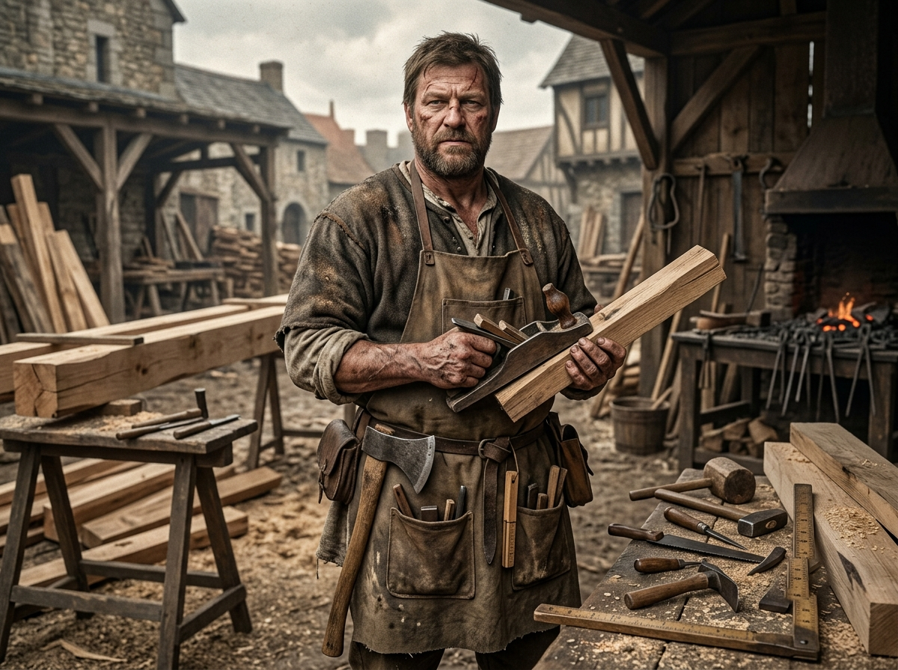

บทบาทMedieval Online RP · Thailand


กษัตริย์ (The King)
กษัตริย์ในยุคนี้ไม่ได้มีอำนาจเบ็ดเสร็จเหมือนกษัตริย์ในยุคสมบูรณาญาสิทธิราชย์แต่เป็นเสมือน"ประธาน" ของกลุ่มขุนนาง
หน้าที่หลัก: เป็นเจ้าของที่ดินทั้งหมดในอาณาจักร โดยจะแบ่งที่ดินบางส่วนให้ขุนนางดูแลเพื่อแลกกับการรับรองความมั่นคงของบ้านเมือง
การแต่งกาย: เสื้อกำมะหยี่สีโทนเข้ม (แดงเลือดนก, กรมท่า, ดำขลิบทอง) ทับด้วยเสื้อคลุมไหล่ประดับขนสัตว์, แหวนตราประทับ (สำคัญมาก), มงกุฎ, สร้อยคอประจำตำแหน่ง
อาวุธ: ดาบพิธีการสวยงามเหน็บเอว
แนวทางการเล่น: วางตัวเป็นผู้ตัดสินชี้ขาดความขัดแย้งระหว่างขุนนางต้องคอยบริหารความสัมพันธ์ไม่ให้ขุนนางคนไหนมีอำนาจมากเกินไปในเชิง Role Play คุณคือผู้ออกคำสั่งภาพรวม เช่น ประกาศสงคราม หรือจัดเก็บภาษีผ่านระบบขุนนาง

ขุนนาง (Lords)
ขุนนางทำหน้าที่เป็น "ตัวกลาง" ระหว่างกษัตริย์และชนชั้นล่าง โดยได้รับมอบที่ดิน (Fief) มาบริหารจัดการ
หน้าที่หลัก
- ต่อกษัตริย์: ต้องให้ความจงรักภักดี และส่งกองกำลังทหาร (อัศวิน) ไปช่วยกษัตริย์ในยามสงคราม
- ต่อประชาชน: ต้องให้ความคุ้มครอง (Protection) จากโจรผู้ร้ายหรือศัตรูภายนอก และจัดสรรที่ดินทำกินให้
การแต่งกาย: เสื้อทูนิคหรือดับเบลตเนื้อดี เน้นสวมใส่สีประจำตระกูลหรือกลุ่มอย่างชัดเจน, เสื้อคลุมสั้นเพื่อความคล่องตัว ต้องมีตราสัญลักษณ์ประจำตระกูล
อาวุธ: ดาบยาวที่ดูทะมัดทะแมงและใช้งานได้จริง ไม่ใช่แค่ดาบพิธีการสวยงาม
แนวทางการเล่น: เน้นความมั่นคงของเขตแดนตัวเองเป็นผู้บริหารจัดการทรัพยากร (ภาษี/ผลผลิต) ที่ได้รับมาจากชาวนา เพื่อนำไปเป็นค่าใช้จ่ายในการบำรุงกองทัพ

นักบวชและบาทหลวง (The Clergy)
ในยุคกลาง ศาสนาคือศูนย์กลางของชีวิต ความเชื่อ และการเมือง
หน้าที่: ทำหน้าที่เป็นที่ปรึกษาของกษัตริย์และขุนนาง ให้ความรู้แก่ผู้คนในอาณาจักร และเป็นผู้ประกอบพิธีกรรมทางศาสนา
การแต่งกาย: เสื้อคลุมยาวกรอมเท้า แขนยาวปิดมิดชิดสีพื้น เช่น น้ำตาล ดำ หรือเทา, เครื่องประดับ สร้อยกางเขนขนาดใหญ่ สายประคำ และคัมภีร์
อาวุธ: ไม่มีอาวุธมีคม (ผิดกฎทางศาสนา) แต่อาจใช้ ไม้เท้าทรงตะขอ
แนวทางการเล่น: เล่นให้เป็นผู้ที่มีอำนาจทางจิตวิญญาณ อาจทำตัวเป็น "สะพานเชื่อม" ระหว่างชนชั้น (เช่น ช่วยไกล่เกลี่ยความขัดแย้ง) หรือเป็นผู้คอยเตือนสติผู้ปกครองให้ทำตามหลักศาสนา

อัศวิน (Knights)
อัศวินคืออาชีพที่เน้นการฝึกฝนทักษะการต่อสู้ และเป็นผู้ที่ได้รับมอบหมายให้ดูแลความสงบเรียบร้อย
หน้าที่หลัก: ปฏิบัติหน้าที่ทางทหารตามคำสั่งของขุนนางเพื่อแลกกับที่ดิน อาหาร และที่พักอาศัย
การแต่งกาย: เสื้อผ้าสวมทับชุดเกราะที่ต้องมีตราสัญลักษณ์ของเจ้านาย ชุดเกราะสวมเกราะโซ่ถักด้านใน และเสริมเกราะแผ่นเหล็กตามจุดสำคัญ เช่น อก ไหล่ และแขน
อาวุธ: ดาบยาวและมักจะสะพายโล่
แนวทางการเล่น: มีวินัยสูงและยึดถือในสัญญาที่ให้ไว้กับขุนนางในเชิง Role Play คุณคือ "มือขวา" ของขุนนาง ผู้ซึ่งต้องออกไปเผชิญหน้ากับอันตรายแทนผู้ปกครองต้องแสดงภาพลักษณ์ที่ดูแข็งแกร่งและพร้อมรบอยู่เสมอ

พ่อค้า (Merchants/Burgesses)
เมื่อเมืองเริ่มขยายตัว ชนชั้นนี้ก็มีความสำคัญเพิ่มขึ้น เพราะเป็นผู้ขับเคลื่อนเศรษฐกิจด้วยเงินตราแทนที่ระบบแลกเปลี่ยนผลผลิต
หน้าที่: นำสินค้าจากที่หนึ่งไปขายอีกที่หนึ่ง หรือผลิตสินค้าที่ชาวนาทำเองไม่ได้ (เช่น ช่างตีเหล็ก, ช่างทำรองเท้า, พ่อค้าผ้า)
การแต่งกาย: เสื้อโค้ตยาวหรือเสื้อคลุมผ่าหน้าทำจากผ้าขนสัตว์เนื้อหนาผ้ากำมะหยี่หรือผ้าไหมนำเข้า, เครื่องประดับ ถุงเงินใบใหญ่ แหวนทองหรือแหวนพลอย
อาวุธ: มีดสั้น
แนวทางการเล่น: เล่นให้เป็นคนที่มีความรู้เรื่องโลกภายนอกและมีความฉลาดแกมโกงในการเจรจาต่อรอง คุณเป็นคนเดียวที่ไม่ยึดติดกับที่ดินเหมือนชาวนา แต่ต้องอาศัยการคุ้มครองจากขุนนางในการขนส่งสินค้า

กองกำลังรักษาความสงบ (Guards)
แตกต่างจากอัศวินตรงที่ไม่ใช่ชนชั้นสูง แต่เป็นกองกำลังชั้นผู้น้อยที่ดูแลความปลอดภัยในระดับพื้นที่
หน้าที่: เฝ้ายามที่ประตูเมือง, ลาดตระเวนในตลาด, และปราบปรามการก่อจลาจลย่อยๆ
การแต่งกาย: เสื้อเนื้อหนาเย็บเน้นความแข็งแรงทับด้วยเสื้อกั๊กผ้าคลุมสีประจำเมือง หมวกเหล็กทรงกะทะหรือหมวกเปิดหน้า, เครื่องประดับ แตรเขาสัตว์ โคมไฟหรือคบเพลิง
อาวุธ: อาวุธด้ามยาว เช่น หอก หรือขวานด้ามยาว
แนวทางการเล่น: เล่นให้เป็นคนที่มีความเด็ดขาดแต่ก็ต้องเผชิญกับสถานการณ์ความวุ่นวายรายวัน เป็นตัวละครที่ช่วยเพิ่มบรรยากาศความตึงเครียดหรือความปลอดภัยให้กับเนื้อเรื่อง

หมอยา / ช่างปรุงยา (Physician / Apothecary)
ผู้กุมความเป็นความตายในยุคที่การแพทย์ยังเป็นเรื่องลึกลับ
หน้าที่: ดูแลอาการเจ็บป่วย ใช้สมุนไพรในการรักษา หรือทำน้ำยาต่างๆ (ตามธีมของเกม)
การแต่งกาย: เสื้อทูนิคหรือเสื้อคลุมยาวปานกลาง สีโทนธรรมชาติ (เขียวใบไม้, ครีม, น้ำตาลอ่อน) ทับด้วยผ้ากันเปื้อนที่มีช่องใส่ของเยอะๆ
แนวทางการเล่น: คุณเป็นที่ต้องการของทุกคนตั้งแต่กษัตริย์ยันชาวนาในเชิง Role Play คุณอาจมีความรู้ที่คนอื่นไม่มี (เช่น พิษหรือสมุนไพรหายาก) ทำให้บทบาทของคุณดูลึกลับและน่าเกรงขาม

ช่างตีเหล็ก (Blacksmith)
ถือเป็น "หัวใจสำคัญ" ของการเตรียมพร้อมทางทหารและเกษตรกรรม
หน้าที่: ตีดาบ/ชุดเกราะให้กับอัศวิน และทำเครื่องมือทางการเกษตร (จอบ, เสียม, ผาลไถ) ให้ชาวนา
การแต่งกาย: เสื้อผ้าฝ้ายหรือลินินหยาบๆ สีมืด (เทา, น้ำตาล) พับแขนเสื้อขึ้นทับด้วย ผ้ากันเปื้อนหนังหนา ที่มีคราบเขม่าหรือรอยไหม้
แนวทางการเล่น: คุณคือคนกุมความได้เปรียบ เพราะทุกคนต้องมาหาคุณเมื่ออุปกรณ์พังในเชิง Role Play คุณอาจจะเป็นคน "รู้ข่าววงใน" มากที่สุด เพราะระหว่างตีเหล็ก มักจะมีคนแวะเวียนมาพูดคุยหรือบ่นเรื่องต่างๆ ให้ฟังเสมอ

ช่างก่อสร้าง (Master Builder / Mason)
ผู้สร้างความยิ่งใหญ่ให้กับอาณาจักร
หน้าที่: ออกแบบและควบคุมการสร้างปราสาท, โบสถ์, กำแพงเมือง หรือคฤหาสน์ของขุนนาง
การแต่งกาย: เสื้อผ้าฝ้ายหรือลินินหยาบๆ สีมืด (เทา, น้ำตาล) พับแขนเสื้อขึ้นทับด้วย ผ้ากันเปื้อนหนังหนา ที่มีคราบเขม่าหรือรอยไหม้
แนวทางการเล่น: คุณต้องทำงานร่วมกับขุนนาง (ผู้ว่าจ้าง) และชาวนา (แรงงาน) ในเชิง Role Play คุณคือคนที่มีเหตุผลและเป๊ะในเรื่องตัวเลข/โครงสร้าง อาจเป็นตัวละครที่คอยเตือนเรื่องงบประมาณหรือความปลอดภัยของสิ่งก่อสร้าง